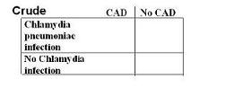
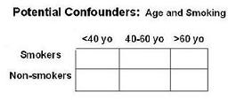
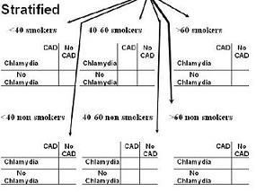
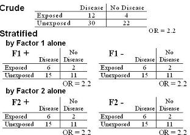
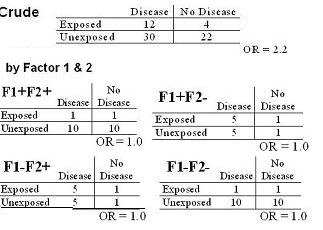

Adjustment for Multiple Confounders
Lead Author(s): Jeff Martin, MD
Stratification of Multiple Confounders with More Than Two Levels
Stratification can also be used when there are multiple potential confounders with more than two levels.
- We want to look at the joint effects of these potential confounders,
- in other words these potential confounders working together, by forming mutually exclusive and exhaustive strata.
Potential Confound effects
We are looking at the association between Chlamydia pneumonia infection and coronary artery disease (CAD)
- W hat are the potential confounding effects of age and smoking (see figure below)?

Strata for CONFOUNDING Effects
To perform stratification, we would form six strata where we could put each subject only once by crossing smoking by age (see figure below). This would result in the following strata:
- < 40 year old smokers,
- < 40 year old non-smokers,
- 40-60 year old smokers,
- 40-60 year old non-smokers,
- > 60 year old smokers, and >
- 60 year old non-smokers.

Schema for Potential Founding Effects
Schematically (below), it would look like this with six mutually exclusive and exhaustive strata based on the two potential confounders looked at jointly.
- Each of these strata is unconfounded by age and smoking; i.e., all members of the strata have the same value of the two confounders.

Evaluating Joint Confounding
There are a couple of approaches you could take.
1) You could look at each of the other variables one variable at a time to see if it is a confounder.
2) You could look at combinations of potential confounders.
Looking at One Variable at a Time
You could look at each of the other variables one variable at a time to see if it is a confounder.
Consider this case-control study where the crude OR is 2.2.
- There are two additional variables, typically we call these covariates:

- If we just stratified by factor 1, we would see no evidence of interaction or confounding.
- If we just stratified by factor 2, we would also see no evidence of interaction or confounding.
- If you stopped here, you would be tempted to say that there is no effect of factors 1 and 2 in the relationship between the primary exposure and the outcome.
This is a dangerous practice because it ignores the joint effects of the two potential confounders (the third and fourth variables).
Looking at Combinations of Potential Confounders
If we formed four strata based on the combinations of the two potential confounders, we would see the following. 
Each of the four strata shows no effect.
- In other words, when we looked at the joint effects of factors 1 and 2, positive confounding is present - such that, after adjustment for factors 1 and 2, there is no longer any association between the exposure and the disease.
This illustrates the point that variables which when evaluated alone show no effect (ie no confounding or no interaction) may show confounding when evaluated jointly.
Approaches for More than One Potential Confounder
Backward versus forward confounder evaluation strategies are relevant both for stratification and multivariate regression modeling. In other words, we are selecting for the best model